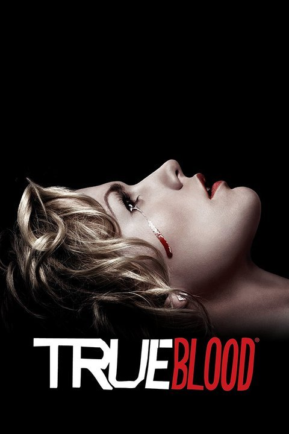

True Blood (Aired 2008-2014)
Rating: 8/10
Age Restriction: TV-MA
Telepathic waitress Sookie Stackhouse encounters a strange new supernatural world when she meets the mysterious Bill, a southern Louisiana gentleman and vampire.
Creator: Alan Ball
Cast
Anna Paquin as .... Sookie Stackhouse
Stephen Moyer as .... Bill Compton
Sam Trammell as .... Sam Merlotte
Ryan Kwanten as .... Jason Stackhouse
Rutina Wesley as .... Tara Thornton
Chris Bauer as .... Andy Bellefleur
Nelsan Ellis as .... Lafayette Reynolds